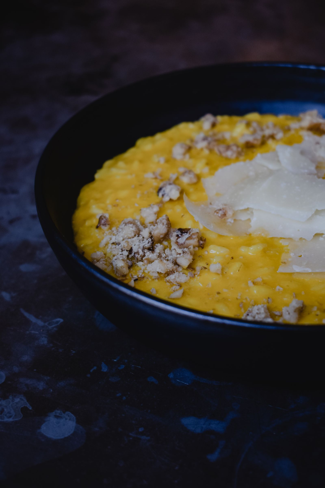
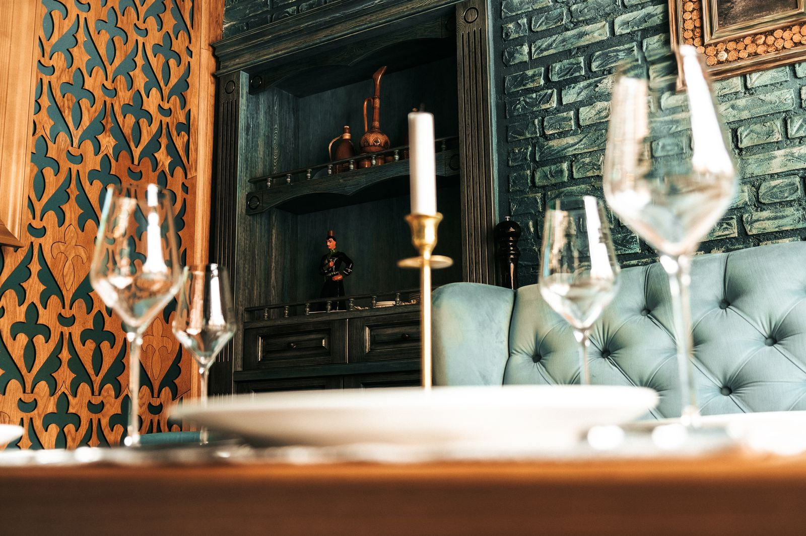
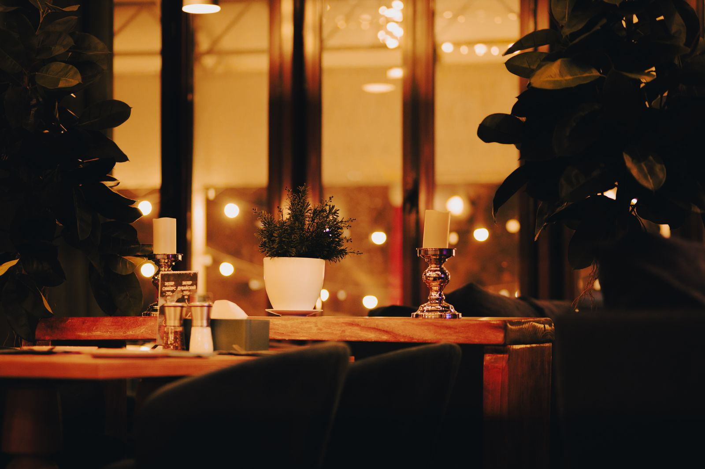

Truffle risotto
Slow-stirred rice, parmesan and a fragrant touch of truffle.
A neighbourhood table
Seasonal plates, soft light, and good company. Come as you are and stay awhile.
Explore the menu

A place to settle in
A seat at our table
Maison Serein began with a simple thought: the best evenings are rarely rushed. We imagined a little room where familiar faces meet, candles burn low, and the conversation can carry on.
Our kitchen takes its lead from the season, turning thoughtful ingredients into comforting plates. Nothing too fussy, just care in the details and a warm welcome at the door.
Discover the experienceThe pleasure of slowing down
There is a certain magic in the everyday ritual of sharing a meal. Pull up a chair, take your time, and let the evening unfold.
A glimpse of the simple pleasure of cooking: a short film of pilaf being prepared.
“Cooking Plov” by Lokk1y, CC BY-SA 4.0. Unchanged.
We would love to see you
A little corner for good food and even better company.
18 Rue des Lilas
75011 Paris, France
Tuesday – Saturday
6:00 pm – 10:30 pm
hello@maisonserein.example
+33 1 00 00 00 00
Maison Serein and its contact details are fictional.
This form is a demonstration only. Messages are not sent or saved.